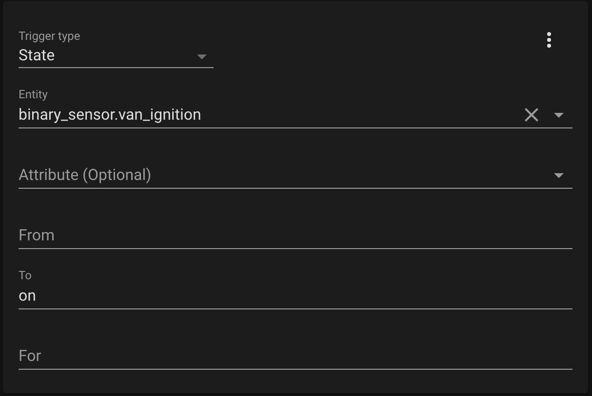
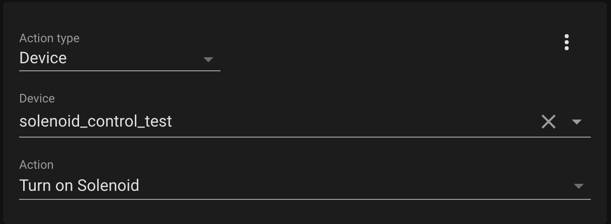

One of the biggest issues I've had with my van build has been with the drawers. They seem to
always want to fly open while driving. I started off using a mix of magnetic and physical door catches, but they
were either too weak for the heavier drawers, or wouldn't always latch properly. Next I added physical latches to
the heavier drawers, but they would either vibrate open on bumpy roads, or I'd simply forget to latch them before
driving. Then one day I came across a solenoid door latch. It seemed like the perfect solution! I could integrate
it into my Home Assistant set up and program it to automatically lock closed.
Items needed to set this up:
- Solenoid Door Latch: This is the only one I found that fit my needs. It needed to run on 12V, be unlocked when not powered, have a door style latch (not just a cylinder), and be relatively low power
- Other electronics: Either an ESP32/ESP8266 or use the Raspberry Pi to control the solenoid, plus a MOSFET, diode, and resistor (see below for details on the circuit)
A solenoid is a device that converts an electrical current into linear motion. The device generally
consists of wire coil with a plunger in the middle of it. When current is passed through the coil, it generates a
magnetic field which pushes the plunger in one direction. When the current is removed, a mechanical spring pulls
the plunger back to its starting position.
In the above solenoid that I selected, the plunger has a door style latch on its end. The solenoid also
runs on 12V which fits into the van electrical system well. It's relatively low power 0.3A when powered, although
power isn't a big deal since I plan to only power it when the engine is running and the alternator is charging my
batteries. The above solenoid is also unlocked when it's not powered which is very important for my application.
Most of the devices I found were actually the opposite.
With the solenoid selected, we now need a way to switch it on and off. The circuit used for this is very
similar to the circuit used to control the lights:
A GPIO pin from an ESP32 is used to power on and off an N-Channel
MOSFET. This shuts on and off the current flowing through the solenoid which is connected to J5. A 10k pull-down
resistor is added to the GPIO pin so that when the GPIO pin is not configured, the solenoid will be powered off. A
diode is also connected in reverse across the solenoid. This is done because the solenoid is essentially an
inductor. Inductors cannot change current instantaneously, so when the MOSFET is switched off, current will
continue flowing through the solenoid for a short period. With nowhere for the current to go, a voltage spike can
occur. The added diode gives the current a return path once the voltage increases past the diodes forward voltage
value and prevents it from spiking any higher.
With the circuit built on a breadboard and using an ESP32 development board (I plan to design another PCB
for this eventually), I rigged up a latch on one of my most problematic drawers:
The ESPHome code was pretty straightforward for this one. Just a simple output switch:
switch:
- platform: gpio
pin: 26
name: "Solenoid"
- platform: gpio
pin: 26
name: "Solenoid"
With the ESP32 programmed, I could now control the solenoid from Home Assistant!
This solved the first part of the problem, but I still wanted to have the drawer automatically lock
when I'm driving. Some different solutions I was thinking of for this included using the accelerometer from the
van tilt sensor to detect motion, or connecting to a bluetooth OBD2 adapter and reading the speed of the van.
Then I remembered that I had tapped into one of the ignition wires in the van for the DC-DC charger to charge my
batteries from the alternator when the engine is running. If I could also detect this signal on the Raspberry
Pi, I could lock the drawer when the engine is running.
I'm not an expert on how the ignition wires work, but my guess was that there's a voltage when the van
is on, and it's grounded when the van is off. My multimeter unfortunately broke, so I wasn't able to double
check this, but I continued with this assumption anyways. I assume the voltage on this signal would be too high
for the Raspberry Pi GPIO pins, so I used a MOSFET to step down the voltage:
This circuit steps down the voltage so the Raspberry Pi GPIO pin won't see more than 3.3V. It also
inverts the signal so it should read '1' when the van is off and '0' when it is on. Note that if you don't have
a common ground between your house batteries and the van battery this circuit could perform in unexpected ways.
Next I had to add this signal into Home Assistant. This is done by adding a binary sensor to the
configurations.yaml file:
binary_sensor:
- platform: rpi_gpio
ports:
26: Van Ignition
invert_logic: true
- platform: rpi_gpio
ports:
26: Van Ignition
invert_logic: true
This sets up the sensor on GPIO pin 26 on the Raspberry Pi and re-inverts it. After restarting Home
Assistant you should now have this sensor in your setup.
The last step is to create automations for locking and unlocking the drawer. You can create the
automations in GUI by going to Configuration -> Automations. The trigger should look like this:

And the action should look like this:

With the automations set up, Home Assistant should now automatically lock the drawer when the van is
started and unlock it when it's turned off. I can hear the satisfying click of the solenoid every time I turn on
the van letting me know the drawer is locked!